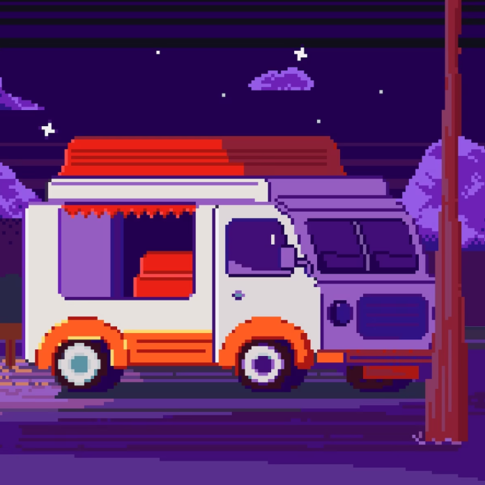

</HTML>
закрывающий тег
Темно
Авто
Светло
Фритрек и нулевой спринт: Подготовка к работе

</HTML>
1 спринт: Я — чистый лист
</HTML>
1 спринт: А если не получится?
<CSS>
2 спринт: Погоня за идеалом
<desigions>
2 спринт: О тех, кто рядом
care
3 спринт: Обходные стратегии
<support>
3 спринт: Когда опускаются руки
<lifes-style: none;>
«Сейчас я здесь»
<experience>